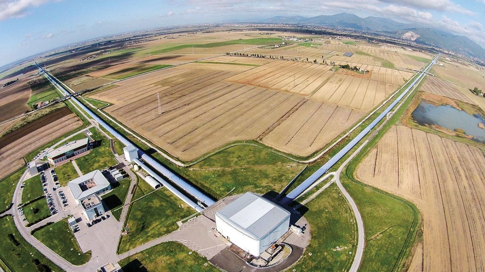

ЛАЗЕРНАЯ ОБСЕРВАТОРИЯ LIGO
1999
LIGO (Laser Interferometer Gravitational-Wave Observatory) — лазерно-интерферометрическая гравитационно-волновая обсерватория. Проект был предложен в 1992 году Кипом Торном, Рональдом Дривером из Калифорнийского технологического института и Райнером Вайсом из Массачусетского технологического института. Проект финансируется американским Национальным научным фондом. Достигая по стоимости 365 миллионов долларов, этот проект является самым амбициозным среди всех когда-либо финансировавшихся фондом.
Международное научное сообщество LIGO (LIGO Scientific Collaboration, LSC) представляет собой растущую с каждым годом группу исследователей: около 40 научно-исследовательских институтов и 600 отдельных учёных работают над анализом данных, поступающих с LIGO и других обсерваторий. В составе коллаборации работают и две научные группы из России: группа В. П. Митрофанова (Кафедра физики колебаний Физического факультета МГУ, Москва) и группа член-корр. РАН А. М. Сергеева (Институт прикладной физики РАН, Нижний Новгород).
11 февраля 2016 года коллаборации LIGO и Virgo объявили об обнаружении гравитационных волн, произошедшем 14 сентября 2015 года на установках LIGO, обнаруженный сигнал исходил от слияния двух чёрных дыр массами 36 и 29 солнечных масс на расстоянии около 1,3 млрд световых лет от Земли, при этом три солнечных массы ушли на излучение.